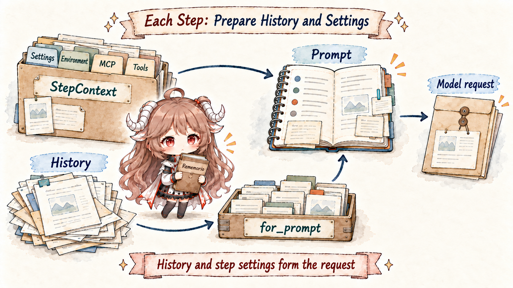
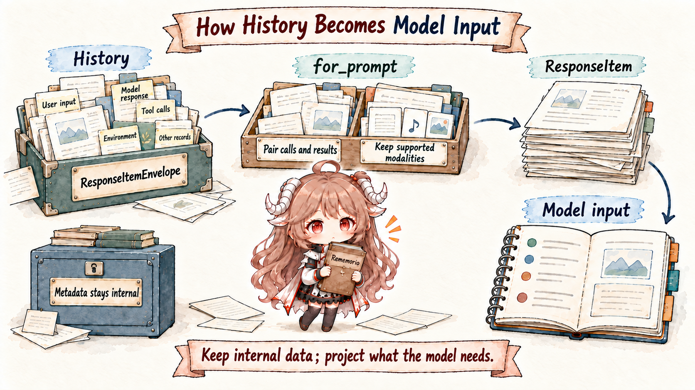
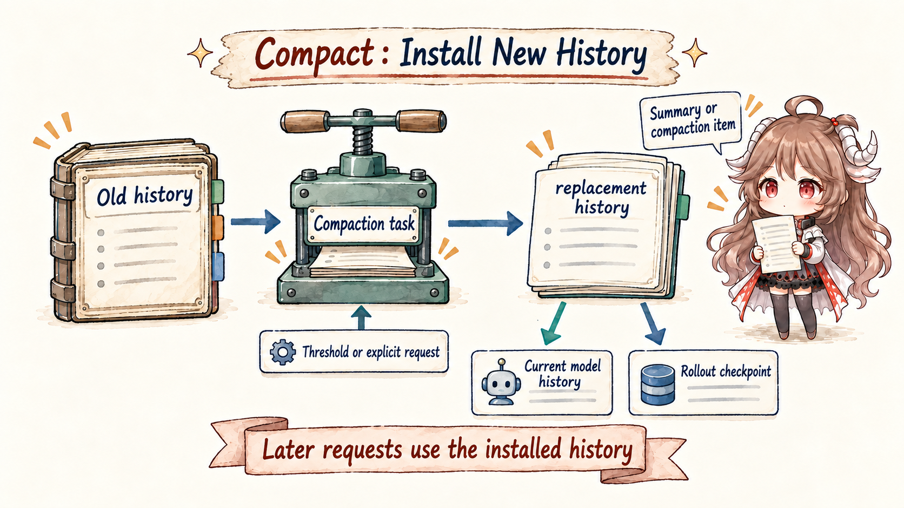
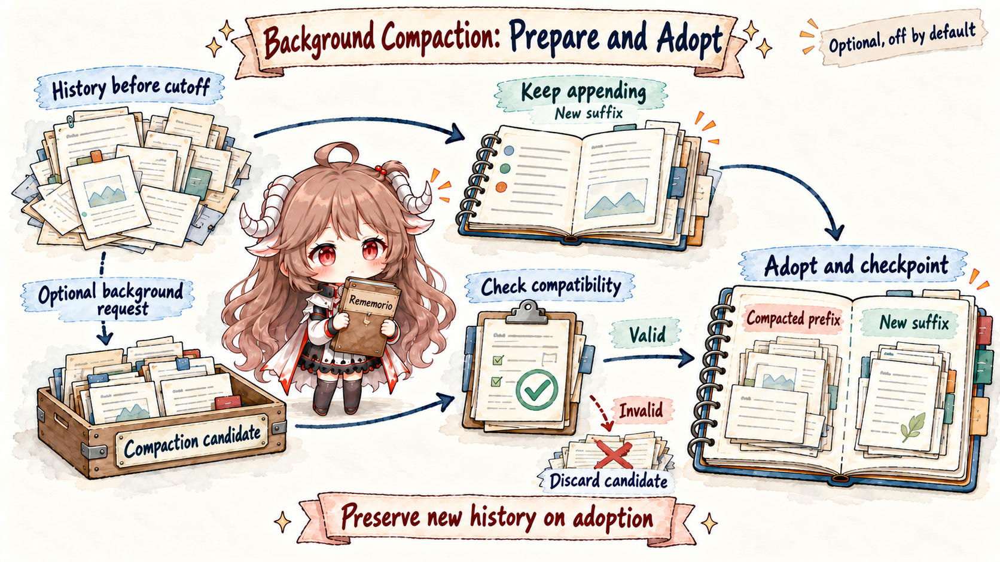

Start with a normal Codex session. You ask it to fix a bug in a
repository. It reads AGENTS.md, searches source files,
runs a test, inspects the failure, and edits the patch. Halfway
through, you add a constraint: do not touch generated files. Later
the thread approaches the context limit and compacts. The next
morning, you resume the thread and expect the agent to continue
from the right place.
A plain "append every message to a chat history" model cannot explain this workflow. Repository instructions, working directory, sandbox policy, skill metadata, tool schemas, tool outputs, images, reasoning tokens, pending user input, compaction summaries, and resume baselines are stored and used by different components. Some must be durable. Some are only model-visible for one request. Some may be truncated. Some must be re-injected from scratch if the baseline becomes unreliable.
The official Codex docs describe the product behavior: a thread is a session made from prompts, model outputs, and tool calls; as the agent works, it gathers context from files, tool output, and its running record; everything must fit in the model's context window, and long threads may be compacted. The source answers the next question: where does that information live, when does it become model-visible, and what gets installed after compaction?
OpenAI's
agent-loop article
makes the external constraints concrete: a model request is made from
prompt, tools, input, and related request fields; long-running work also
has to deal with prompt cache, the context window, and compaction.
The source-level question is which of those constraints is carried by
ContextManager, TurnContext, and replacement history,
and which state remains durable versus turn-local.
The easy-to-miss step is what happens after a tool call. The next
model request does not start from a blank page. The previous
reasoning, the tool call, and the returned
function_call_output are appended to the next request's
input in order. The second request therefore keeps the stable prefix
from the first request and adds the new tool facts at the tail.
first inference:
tools (ordinary Responses)
input:
- base instructions
- user task
-> reasoning
-> function_call(call_id=A)
tool execution:
command returns:
function_call_output(
call_id=A
)
next inference:
tools (ordinary Responses)
input:
- base instructions
- user task
- reasoning
- function_call(call_id=A)
- function_call_output(
call_id=A
)
Complete logical input does not imply a full network payload every time. The client assembles its complete input before transport; WebSocket continuation can reuse previous_response_id and send only new input when non-input properties remain compatible and previous input plus returned items remains a prefix. Without a usable response id or matching prefix, it sends full input. Client-side reconstructability remains true, while a blanket claim that Codex never uses previous_response_id does not. Cache reuse and reduced network bytes are separate questions.
Source scope. This article uses official documentation for product behavior and the public openai/codex source for implementation details. Source links point to one fixed public snapshot. Where the source exposes only the remote-compaction selection conditions, this article describes the visible lifecycle and does not infer the server-side summarization algorithm.
The article follows six questions:
- In one agent loop, how do model output, tool calls, and tool results return to the next request?
- Why is durable history not the same thing as the prompt?
- When does Codex inject full initial context, and when does it emit only a diff?
- What does
for_prompt()normalize or filter? - During compaction, which history is replaced and what recovery record remains?
- Why do legacy rollback replay, resume, and model switches affect the next context injection?
1. Separate the four kinds of data
The first step is to stop looking for one memory object. Codex has at least four relevant kinds of data: session-scoped state, per-turn configuration, durable history, and the model request. They are not interchangeable.
TurnContext keeps turn identity, initial settings, and control state. Each sampling request captures a StepContext containing one version of model settings, environments, MCP connections, and the tool router. Changes during tool execution can affect a later step without mixing the advertised capabilities and execution settings of an already captured request.
| Data | Stored or generated by | Model-visible? | What must remain true |
|---|---|---|---|
| Session state | SessionState |
Not as a whole | Keep history, permission baselines, compaction windows, and recovery state across turns. |
| Turn and sampling snapshots | TurnContext + StepContext |
Partly, through context messages and request fields | Keep each sampling request and its tool execution on the same captured configuration. |
| Durable history | ContextManager.items |
Only after filtering and normalization | Retain recoverable API messages, tool calls, outputs, and compaction records. |
| Model-visible prompt | for_prompt() + Prompt |
Yes | Send a legal request view adapted to the current model and tools. |
The ContextManager
comment calls it a transcript of thread history, but the struct
also carries history_version, token_info,
and reference_context_item. That last field is the
baseline used to generate model-visible settings updates. If it is
missing, the next regular turn falls back to full context
reinjection instead of diffing against stale state.
2. A Turn Does Not Jump Straight From User Input To Model
In run_turn,
the first step is not to record the new user message. Codex first
runs pre-sampling compaction. A nearby source note says this happens
before context updates and the new user message are recorded, and
that pending incoming items should eventually be estimated before
deciding whether the thread crosses the compaction threshold.

After the pre-sampling compaction check, run_turn captures the first StepContext, records environment updates, and prepares skills and user input. Before sampling it clones history and applies for_prompt() using that step’s model input modalities. Later steps can capture refreshed settings and capabilities; a turn-wide object does not freeze the tool catalog for every request forever.
turn starts
-> maybe compact old history
-> capture StepContext for this sampling request
-> inject full context or WorldState changes
-> load skills/plugins chosen for this turn
-> record user input and additional context
-> clone history
-> for_prompt(input_modalities)
-> build Prompt with tools and base instructions
-> stream model response
The turn loop also treats pending input carefully. A
source comment
says the turn-scoped ModelClientSession is reused
across retries, while pending input is deliberately not drained at
the very start of a turn or immediately after auto-compaction.
That ordering preserves continuation semantics. If a steer is
inserted in the wrong place, the model may resume the wrong work.
2.1 Initial Context Is Synthesized Runtime State
Full initial context comes from
build_initial_context_with_world_state.
It collects model-switch guidance, permission instructions,
developer instructions, collaboration mode, realtime state,
personality, apps instructions, available skills, plugins,
extension fragments, token budget context, environment context,
and user instructions. These become developer or contextual user
messages. They are not the user chat message.
The structured baseline is stored as a
TurnContextItem.
That lets Codex later decide whether a new turn can emit only a
settings diff or must re-inject the full context bundle.
2.2 Compare WorldState against the established baseline
Suppose the bug-fix task changes from workspace-write to read-only. The runtime must distinguish the old environment, the current environment, and what it has already told the model. It builds a WorldState and keeps a world_state_baseline in history. The separate reference_context_item remains the durable turn-settings baseline.
record_context_updates_and_set_reference_context_item builds WorldState for the captured step. With no reference baseline it emits full initial context plus a full WorldState record. Otherwise update_world_state produces changed fragments, with turn contributions added when turn settings change.
shape-level:
step = capture(settings + environments + MCP + tools)
world = build_world_state_for_step(step)
if reference_context_item is None:
history += full_initial_context(step, world)
rollout += full_world_state
else:
history += visible_world_state_changes
rollout += world_state_changes_if_any
persist TurnContextItem when required
advance the reference baselineThe order matters: record model-visible messages first, persist the WorldState that produced them next, then write the required TurnContextItem. A snapshot-only change with no visible fragment or turn-setting change does not require another TurnContext record. Recovery must not restore a baseline that claims the model received an update whose message was never recorded.
Before each sampling request, record_step_world_state_if_changed renders state from the actual StepContext, appends visible fragments, then advances the WorldState baseline and persists its patch. Once full context is established, later changes join the history tail.
3. for_prompt() filters and normalizes history
Before sampling, Codex does not send raw
ContextManager.items. It calls
for_prompt(),
which normalizes history and returns the items suitable for the
current model request. Durable history stays recoverable, while the generated request must satisfy the current model's capabilities.

normalize_history supplies missing call outputs, removes orphaned paired outputs, and strips unsupported image and audio content. Function/custom outputs need their matching calls; named external outputs may stand alone. for_prompt() then unwraps ResponseItemEnvelope into API ResponseItem values. History-only provenance and truncation-budget metadata stay local instead of becoming the API envelope.
durable history, shape-level:
user text
function_call(call_id=A)
function_call_output(call_id=A)
orphan function_call_output(call_id=old)
user image + audio
model-visible view for a text-only model:
user text
function_call(call_id=A)
function_call_output(call_id=A)
user text with unsupported image/audio stripped
The same layer also truncates large tool outputs. The
record_annotated_items
path applies a truncation policy to function output payloads.
Then build_prompt
adds model-visible tool specs, parallel tool call support, base
instructions and output schema. Tools are not
stored as normal chat messages, but their schemas still enter the
model-visible request.
3.1 Before compaction, combine server counts and local estimates
for_prompt() explains what the model sees. The next question is when the
stored history is large enough to compact. Token accounting is not just the
server's last usage value.
get_total_token_usage
adds the latest server usage, local items appended after the last
model-generated item, and, when the server has not included them,
estimated non-last reasoning tokens. The local estimate is coarse:
the estimator is byte-based, not tokenizer-accurate.
context_window_token_status
uses that active context count together with the configured
auto-compact scope, a scope limit, and the full context window
limit. In BodyAfterPrefix mode, it subtracts a
prefill baseline held by
AutoCompactWindow.
Server-observed input tokens replace an estimated baseline when
they become available.
4. Compaction Installs Replacement History
Compaction is easy to under-describe as "make a summary." In Codex, the visible mechanism is a recoverable history rewrite: generate a handoff summary, preserve recent real user messages, install replacement history, advance the auto-compact window, and decide how initial context should be represented after the rewrite.

4.1 Every compaction entry installs full context
Pre-turn checks the old window before recording fresh input; mid-turn checks the budget when the model needs to continue; manual and post-turn paths can also compact. They share replacement construction: capture the current model's full initial context, WorldState and TurnContext baseline and install them with the replacement history. During a model switch, the previous model may produce the summary while the installed context and token recomputation use the current model.
The insertion rule places initial context before the last real user/agent message or retained standalone tool output. With none available, it inserts before the summary or compaction item. After a full replacement, that summary or compaction item stays after the retained messages so the next request can continue the task.
successful full replacement, shape-level:
earlier retained messages
refreshed full initial context
last retained user / agent message / standalone output
summary or compaction item
checkpoint:
Compacted(replacement_history, window, resume_metadata)
WorldState(full=true)
TurnContext(current baseline)4.2 Local summaries enter history after completed
Local compaction uses a handoff prompt covering progress, decisions, constraints, remaining steps and essential data. The request reads a history clone and adds the summarization task. drain_to_completed buffers each OutputItemDone within its attempt; response.completed admits successful output and updates records and usage according to the phase. A disconnected or incomplete response ends the attempt without leaving a partial summary in the main history or rollout. Existing messages and tool results remain recoverable.
If pre-turn compaction fails, run_turn finishes input hooks and records the incoming prompt before publishing the error, preserving the newly submitted task in recoverable history.
After success, build_compacted_history keeps recent real user messages from newest to oldest under a 20,000-token text budget, then places SUMMARY_PREFIX and the handoff summary in the final user message. Full initial context is inserted at its defined boundary; replace_compacted_history installs history and advances the window, and the caller recomputes token usage.
4.3 What remote v2 retains
A remote v2 attempt clones history, uses for_prompt_annotated() to obtain input and dedicated history metadata, and appends CompactionTrigger. The collector requires response.completed and exactly one compaction output before installation. Failures follow bounded retry and fallback conditions. Public client code establishes this lifecycle; content generation runs on the server.
Retention selection includes real user messages, eligible agent messages, and client-authored developer messages when their feature is enabled. The disabled-by-default retain_client_tool_outputs feature additionally honors client-marked retain: true function_call_output items with a name and no call_id. Remote v2 and explicit new windows preserve their original role under the shared 64,000-token retention budget. Each tool output is kept whole; an output that does not fit and all older content are dropped. Emergency trimming stops at a retained output. The submitted retain choice becomes client_authored history metadata, which is removed from the request projection.
eligible retained standalone output, shape-level:
function_call_output(name="task_context", call_id=None)
submission: retain=true -> history metadata: client_authored=true
feature: retain_client_tool_outputs=true
remote replacement:
retained messages and eligible whole outputs, within budget
refreshed initial context at its insertion boundary
compaction item4.4 Optional background compaction produces a candidate

Background compaction requires the disabled-by-default async_compaction feature, remote v2 support and token_budget disabled. Once the configured window percentage is reached, while foreground compaction is not yet due, the runtime captures a history prefix and WorldState and launches a separate request. The main turn continues appending messages and tool results. A pre-turn launch also waits for the foreground to establish the backend model pin. The same history generation, model and authentication owner do not launch duplicate attempts.
A completed request produces a candidate. Pre-turn, sampling boundaries that need a follow-up, and post-turn checkpoints inspect ready results; when foreground compaction is due, it may wait for a compatible pending request. Adoption checks model slug and compaction hash; the final installation check verifies history generation, length and authentication-owner generation. Newly appended suffix items remain intact. History replacement or a changed compatibility condition discards the candidate, with foreground work used when required.
captured prefix ── background request ── completed candidate
live history: captured prefix + newly appended suffix
compatible candidate:
compacted prefix + context rebuilt at cutoff + unchanged suffix
-> install complete checkpoint
stale candidate:
discard; run foreground compaction when requiredRequest completion and installation are separate boundaries: a completed background request can already contribute usage; history changes only after validation and replacement. Completed usage is recorded even when a candidate is discarded. Stopping a turn prevents new launches while existing requests remain session-owned; shutdown cancels remaining requests and drains usage processing.
4.5 Persist replacement and recovery baselines together
replace_compacted_history holds the settings persistence lock while installing history and writes Compacted, a full WorldState, TurnContext and the current settings event in that order. Compacted carries replacement_history, window information, retained context and resume_metadata, so recovery can find matching model history and configuration. Goal edits accepted after the input snapshot are preserved as well. Successful installation queues the session-start hook; the caller recomputes token usage.
5. Recovery and New Windows Invalidate Baselines
The difficult part is not appending a new turn. It is keeping the baseline valid after legacy rollback replay, resume, fork, and compaction. Codex does not keep diffing against a baseline it can no longer reconstruct. When the surviving history no longer contains the bundle that established the baseline, Codex clears the baseline.
drop_last_n_user_turns now exists to replay rollback markers in historical rollouts, not as an active rollback operation in the current submission protocol. It still removes context updates adjacent to the cut. If this trims a mixed initial-context developer bundle, the trim logic clears reference_context_item, forcing complete reinjection on the next real turn.
Resume reconstruction treats history, previous settings, reference
context, and window id as a single recovery group.
apply_rollout_reconstruction
installs the reconstructed history and baseline. In
BodyAfterPrefix mode, it also estimates prefix tokens
for the recovered compaction window.
start_new_context_window advances the window number and ids, constructs initial context from the captured step and WorldState, and installs an empty-message CompactedItem with a fresh baseline. When the corresponding features are enabled, it also preserves client-authored developer messages and explicitly retained standalone tool outputs within the budget. This path creates a fresh prefix without generating a semantic summary of previous work.
6. Common Misreadings
The mechanism becomes easier to reuse once the common shortcuts are made explicit.
| Misreading | What the source shows | What breaks if implemented literally |
|---|---|---|
| History is the prompt | ContextManager stores durable items; for_prompt() derives a request view. |
Orphan outputs, unsupported images, or bad call/output pairs can poison the request. |
| Initial context is repeated every turn | A valid baseline allows WorldState updates; missing or unreliable baselines trigger full reinjection. | Either waste tokens or, worse, diff against stale runtime state. |
| Compaction is just a summary | Compaction creates a handoff summary and installs replacement history in rollout. | Resume cannot know which history was replaced or how to restore the baseline. |
| Token usage is only server usage | Codex combines server usage, local appended items, reasoning estimates, and window baselines. | Large local additions can push a request over the window without being noticed early. |
| Rollback just deletes user messages | Rollback also trims nearby context updates and may clear the reference baseline. | The next turn can send diffs based on an initial context bundle that no longer survives. |
7. Runtime Rules To Carry Forward
The Codex implementation suggests a small set of general rules for coding-agent runtimes.
| State type | Where it belongs | Before model visibility | What must remain true |
|---|---|---|---|
| Conversation and tool evidence | Durable history / rollout | Filter by model capability and preserve valid call/output pairs. | Recovery and later inspection retain complete records. |
| Runtime environment and permissions | Turn context plus reference baseline | Inject fully first, then emit trusted diffs. | The model sees current settings without stale configuration. |
| Tool capability | Tool router / prompt request | Use top-level tools in ordinary Responses and AdditionalTools in Lite history. | Tool schemas match the tools the runtime can execute. |
| Long-thread compaction | Replacement history plus compacted rollout item | Install a summary or compaction item together with full initial context. | Long work can continue while acknowledging compaction is lossy. |
| Context-window accounting | token_info plus auto_compact_window |
Combine server usage with local estimates. | Neither the server count nor the local estimate is trusted alone. |
That is why context management is a natural first mechanism article after the overview. Tool calling, permissions, multi-agent work, skills, and plugins all come back to the same discipline: decide where each piece of state is stored, then decide which parts belong in the next model request.
Sources
- openai/codex fixed source snapshot
- Codex docs overview
- OpenAI: Unrolling the Codex agent loop
- AGENTS.md docs
- Codex skills docs
- SessionState fields
- TurnContext definition
- ContextManager fields
- run_turn order
- build_initial_context_with_world_state
- record_context_updates_and_set_reference_context_item
- normalize_history
- context_window_token_status
- run_compact_task_inner_impl
- Default compact prompt
- replace_compacted_history
- drop_last_n_user_turns